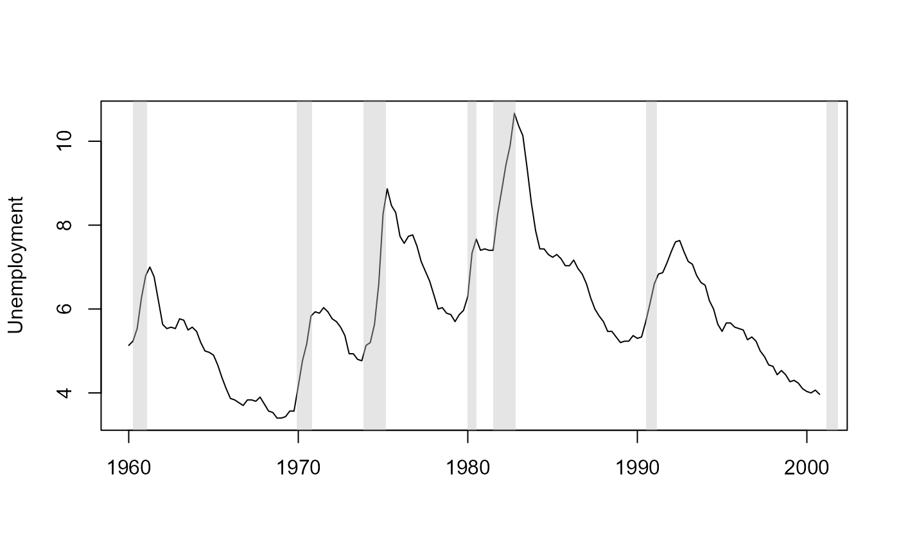

Peak and trough months of US business cycles as dated by the NBER Business Cycle Dating Committee, and the length of each contraction in months.
Examples
rec <- subset(nber_rec, Peak >= as.Date("1960-01-01"))
plot(sw2001$date, sw2001$un, type = "l", xlab = "", ylab = "Unemployment")
rect(rec$Peak, -1e3, rec$Trough, 1e3, col = adjustcolor("grey", 0.4), border = NA)
